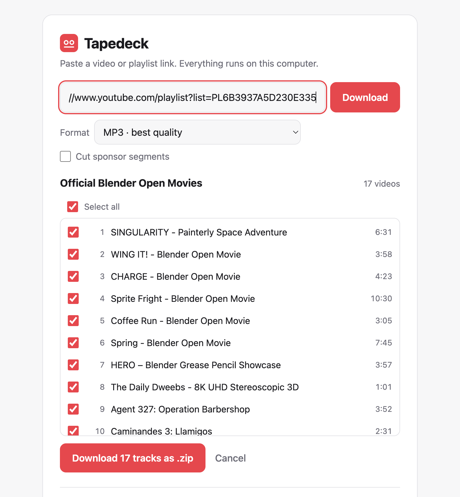

One click from any video. Best quality, playlists you pick from, and no ads or pop-ups, ever. Tapedeck runs on your own computer, so nothing is uploaded anywhere.
$ brew install songbachhoang/tap/tapedeck
Then run tapedeck. Free and open source. Needs Homebrew.

Drag the Tapedeck button to your bookmarks bar. On any video, click it and the download starts.
Keep the original audio with no re-encoding, or get MP3, M4A, 1080p MP4 or 4K video. Cover art included.
See every track first, tick the ones you want, and get one tidy, numbered .zip.
Downloads three tracks at once, straight from your own connection.
YouTube changes all the time. Tapedeck updates its download engine, yt-dlp, by itself every day.
No account, no tracking, no uploads. Read every line on GitHub.
One Homebrew command installs Tapedeck along with ffmpeg and everything else it needs.
Run tapedeck. It opens in your browser, but everything happens on your Mac.
Paste a link or use the one-click button. Your file lands in Downloads.
Yes. Tapedeck is free and open source under the MIT license.
Download websites are full of ads and fake buttons, and YouTube blocks them often. Tapedeck downloads from your own connection, so it's clean, fast and reliable.
Tapedeck is made for macOS. It runs on Linux with Python, ffmpeg and Deno installed. Windows isn't supported yet.
Download videos you own, that are Creative Commons or public domain, or that you have permission to save. Downloading may be against YouTube's Terms of Service, so use Tapedeck responsibly.